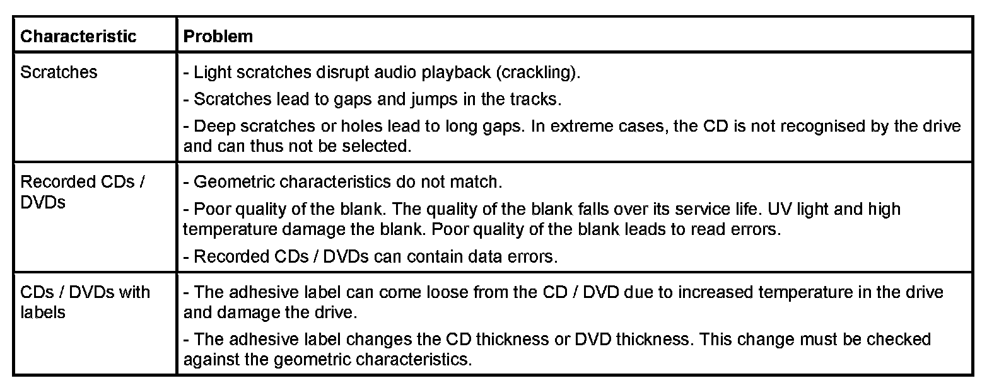

Operation CHARM
: Car repair manuals for everyone.
Home
>>
BMW
>>
2007
>>
X3 3.0si (E83) L6-3.0L (N52K)
>>
Repair and Diagnosis
>>
Accessories and Optional Equipment
>>
Navigation System
>>
Description and Operation
>>
Drives
>>
Quality Inspection
>>
Visual Characteristics of the CD/Dvd
Visual Characteristics of the CD/Dvd
Visual characteristics of the CD/DVD
The visual characteristics of CDs and DVDs have to be checked alongside the geometric characteristics.
